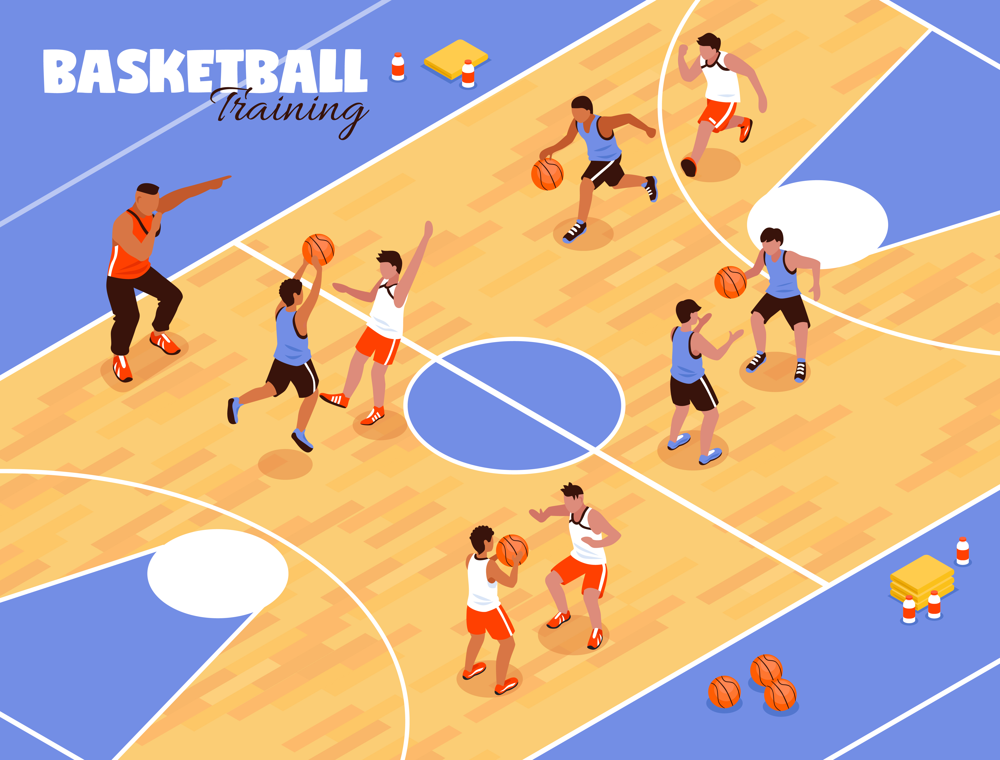
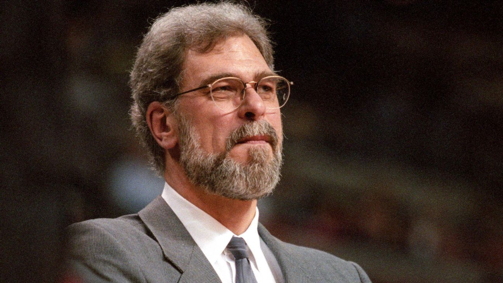
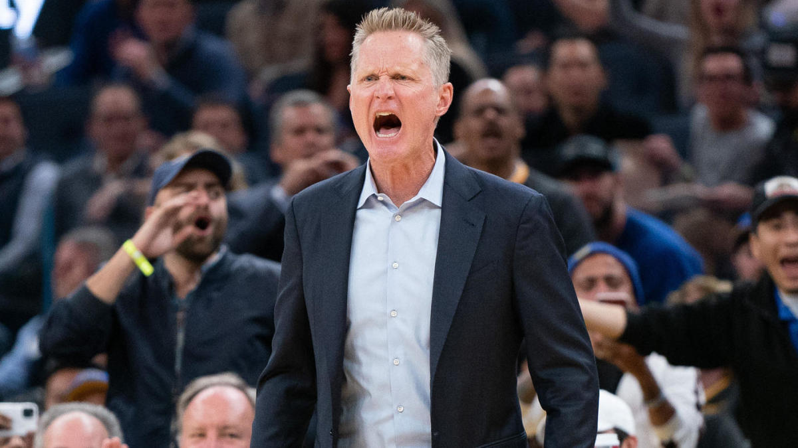
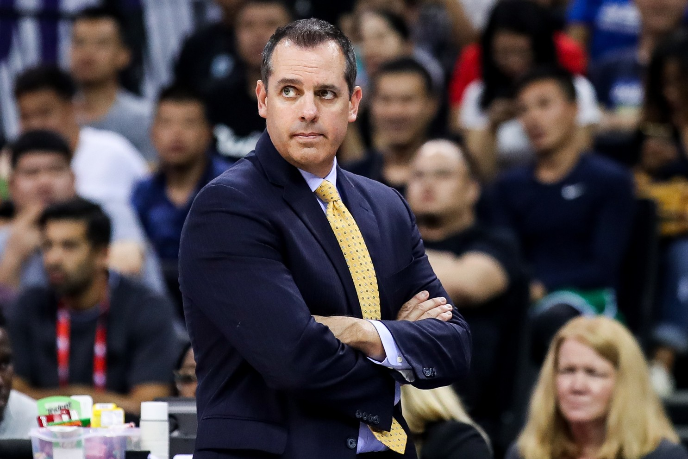
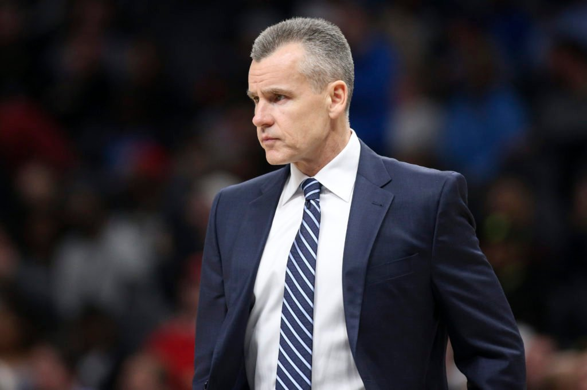
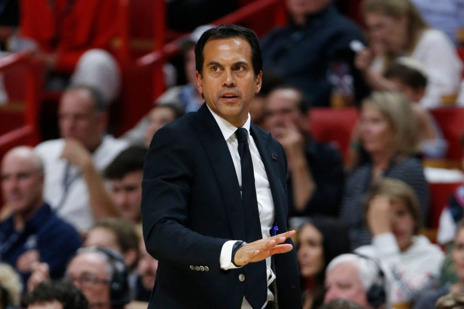
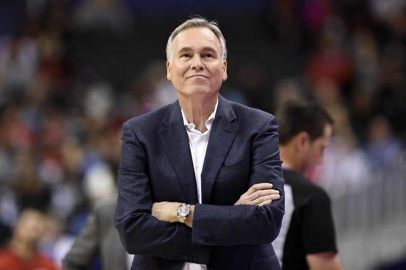
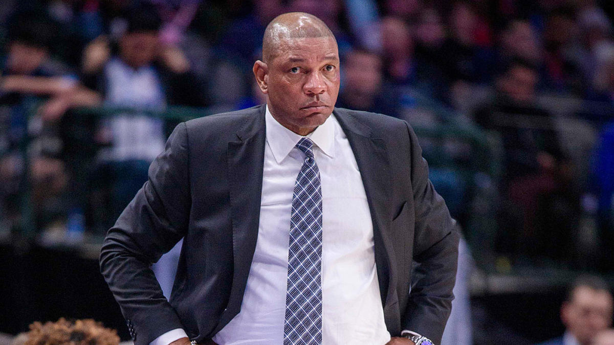
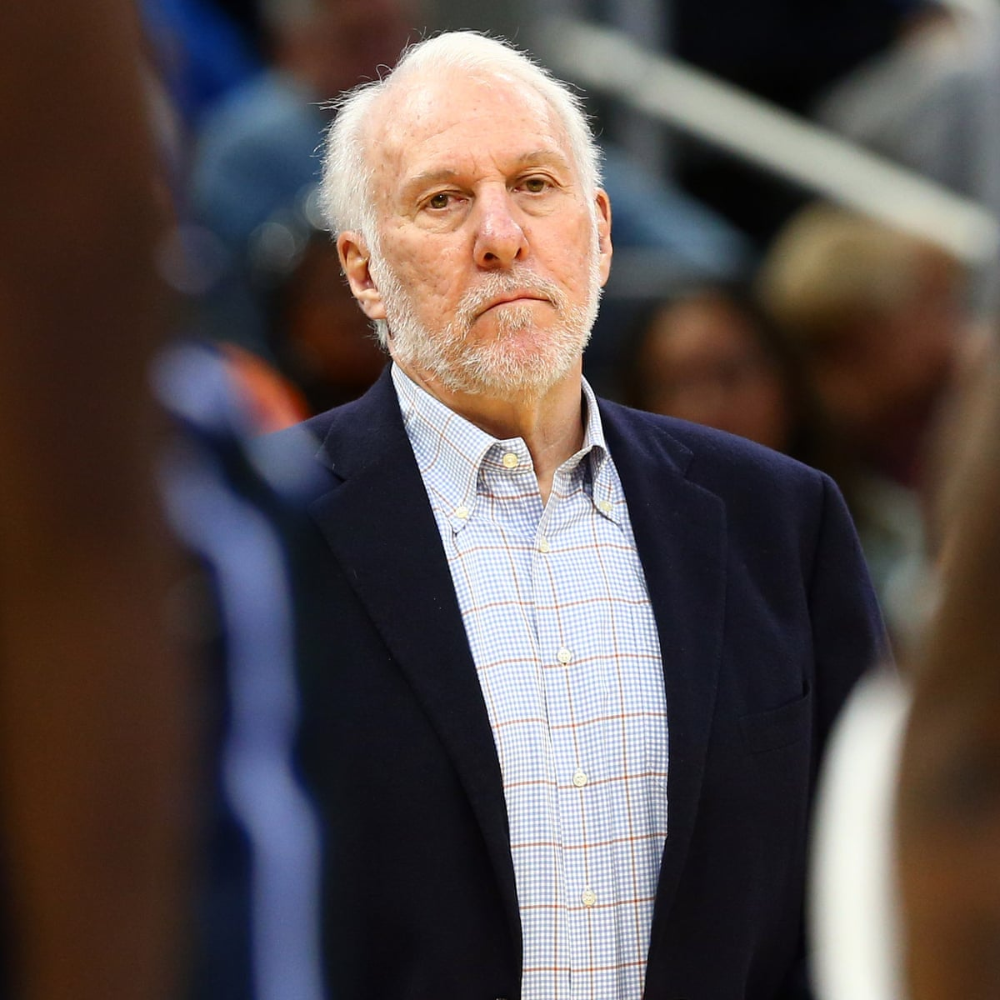

¿Que es un entrenador de baloncesto?

Entrenadores
El entrenador de baloncesto es la persona encargada de dirigir y diseñar estrategias para el comportamiento de un equipo de baloncesto o de un jugador de baloncesto individual. El entrenador de baloncesto generalmente abarca la mejora de las habilidades ofensivas y defensivas individuales del equipo, así como el acondicionamiento físico general. Los entrenadores también tienen la responsabilidad de mejorar su equipo mediante el desarrollo de jugadas, estrategias y la gestión del juego. Los entrenadores también enseñan e inspiran a su equipo a dar lo mejor de sí.
Imágenes entrenadores


Phil Jackson


Steve Kerr


Frank Vogel


Billy Donovan


Erik Spoelstra


Mike D'Antoni


Doc Rivers


Gregg Popovich